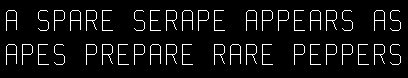

An Example of Using a Display List
A display list is a convenient and efficient way to name and organize a set of OpenGL commands. For example, suppose you want to draw a torus and view it from different angles. The most efficient way to do this would be to store the torus in a display list. Then whenever you want to change the view, you would change the modelview matrix and execute the display list to draw the torus. Example 7-1 illustrates this.
Example 7-1 : Creating a Display List: torus.c
#include <GL/gl.h>
#include <GL/glu.h>
#include <stdio.h>
#include <math.h>
#include <GL/glut.h>
#include <stdlib.h>
GLuint theTorus;
/* Draw a torus */
static void torus(int numc, int numt)
{
int i, j, k;
double s, t, x, y, z, twopi;
twopi = 2 * (double)M_PI;
for (i = 0; i < numc; i++) {
glBegin(GL_QUAD_STRIP);
for (j = 0; j <= numt; j++) {
for (k = 1; k >= 0; k--) {
s = (i + k) % numc + 0.5;
t = j % numt;
x = (1+.1*cos(s*twopi/numc))*cos(t*twopi/numt);
y = (1+.1*cos(s*twopi/numc))*sin(t*twopi/numt);
z = .1 * sin(s * twopi / numc);
glVertex3f(x, y, z);
}
}
glEnd();
}
}
/* Create display list with Torus and initialize state*/
static void init(void)
{
theTorus = glGenLists (1);
glNewList(theTorus, GL_COMPILE);
torus(8, 25);
glEndList();
glShadeModel(GL_FLAT);
glClearColor(0.0, 0.0, 0.0, 0.0);
}
void display(void)
{
glClear(GL_COLOR_BUFFER_BIT);
glColor3f (1.0, 1.0, 1.0);
glCallList(theTorus);
glFlush();
}
void reshape(int w, int h)
{
glViewport(0, 0, (GLsizei) w, (GLsizei) h);
glMatrixMode(GL_PROJECTION);
glLoadIdentity();
gluPerspective(30, (GLfloat) w/(GLfloat) h, 1.0, 100.0);
glMatrixMode(GL_MODELVIEW);
glLoadIdentity();
gluLookAt(0, 0, 10, 0, 0, 0, 0, 1, 0);
}
/* Rotate about x-axis when "x" typed; rotate about y-axis
when "y" typed; "i" returns torus to original view */
void keyboard(unsigned char key, int x, int y)
{
switch (key) {
case `x':
case `X':
glRotatef(30.,1.0,0.0,0.0);
glutPostRedisplay();
break;
case `y':
case `Y':
glRotatef(30.,0.0,1.0,0.0);
glutPostRedisplay();
break;
case `i':
case `I':
glLoadIdentity();
gluLookAt(0, 0, 10, 0, 0, 0, 0, 1, 0);
glutPostRedisplay();
break;
case 27:
exit(0);
break;
}
}
int main(int argc, char **argv)
{
glutInitWindowSize(200, 200);
glutInit(&argc, argv);
glutInitDisplayMode(GLUT_SINGLE | GLUT_RGB);
glutCreateWindow(argv[0]);
init();
glutReshapeFunc(reshape);
glutKeyboardFunc(keyboard);
glutDisplayFunc(display);
glutMainLoop();
return 0;
}
Let's start by looking at init(). It creates a display list for the torus and initializes the viewing matrices and other rendering state. Note that the routine for drawing a torus (torus()) is bracketed by glNewList() and glEndList(), which defines a display list. The argument listName for glNewList() is an integer index, generated by glGenLists(), that uniquely identifies this display list.
The user can rotate the torus about the x- or y-axis by pressing the `x' or `y' key when the window has focus. Whenever this happens, the callback function keyboard() is called, which concatenates a 30-degree rotation matrix (about the x- or y-axis) with the current modelview matrix. Then glutPostRedisplay() is called, which will cause glutMainLoop() to call display() and render the torus after other events have been processed. When the `i' key is pressed, keyboard() restores the initial modelview matrix and returns the torus to its original location.
The display() function is very simple: It clears the window and then calls glCallList() to execute the commands in the display list. If we hadn't used display lists, display() would have to reissue the commands to draw the torus each time it was called.
A display list contains only OpenGL commands. In Example 7-1, only the glBegin(), glVertex(), and glEnd() calls are stored in the display list. The parameters for the calls are evaluated, and their values are copied into the display list when it is created. All the trigonometry to create the torus is done only once, which should increase rendering performance. However, the values in the display list can't be changed later. And once a command has been stored in a list it is not possible to remove it. Neither can you add any new commands to the list after it has been defined. You can delete the entire display list and create a new one, but you can't edit it.
Note: Display lists also work well with GLU commands, since those operations are ultimately broken down into low-level OpenGL commands, which can easily be stored in display lists. Use of display lists with GLU is particularly important for optimizing performance of GLU tessellators and NURBS.
Display-List Design Philosophy
To optimize performance, an OpenGL display list is a cache of commands rather than a dynamic database. In other words, once a display list is created, it can't be modified. If a display list were modifiable, performance could be reduced by the overhead required to search through the display list and perform memory management. As portions of a modifiable display list were changed, memory allocation and deallocation might lead to memory fragmentation. Any modifications that the OpenGL implementation made to the display-list commands in order to make them more efficient to render would need to be redone. Also, the display list may be difficult to access, cached somewhere over a network or a system bus.
The way in which the commands in a display list are optimized may vary from implementation to implementation. For example, a command as simple as glRotate*() might show a significant improvement if it's in a display list, since the calculations to produce the rotation matrix aren't trivial (they can involve square roots and trigonometric functions). In the display list, however, only the final rotation matrix needs to be stored, so a display-list rotation command can be executed as fast as the hardware can execute glMultMatrix*(). A sophisticated OpenGL implementation might even concatenate adjacent transformation commands into a single matrix multiplication.
Although you're not guaranteed that your OpenGL implementation optimizes display lists for any particular uses, the execution of display lists isn't slower than executing the commands contained within them individually. There is some overhead, however, involved in jumping to a display list. If a particular list is small, this overhead could exceed any execution advantage. The most likely possibilities for optimization are listed next, with references to the chapters where the topics are discussed.
- Matrix operations (Chapter 3). Most matrix operations require OpenGL to compute inverses. Both the computed matrix and its inverse might be stored by a particular OpenGL implementation in a display list.
- Raster bitmaps and images (Chapter 8). The format in which you specify raster data isn't likely to be one that's ideal for the hardware. When a display list is compiled, OpenGL might transform the data into the representation preferred by the hardware. This can have a significant effect on the speed of raster character drawing, since character strings usually consist of a series of small bitmaps.
- Lights, material properties, and lighting models (Chapter 5). When you draw a scene with complex lighting conditions, you might change the materials for each item in the scene. Setting the materials can be slow, since it might involve significant calculations. If you put the material definitions in display lists, these calculations don't have to be done each time you switch materials, since only the results of the calculations need to be stored; as a result, rendering lit scenes might be faster. (See "Encapsulating Mode Changes" for more details on using display lists to change such values as lighting conditions.)
- Textures (Chapter 9). You might be able to maximize efficiency when defining textures by compiling them into a display list, since the display list may allow the texture image to be cached in dedicated texture memory. Then the texture image would not have to be recopied each time it was needed. Also, the hardware texture format might differ from the OpenGL format, and the conversion can be done at display-list compile time rather than during display.
In OpenGL version 1.0, the display list is the primary method to manage textures. However, if the OpenGL implementation that you are using is version 1.1 or greater, then you should store the texture in a texture object instead. (Some version 1.0 implementations have a vendor-specific extension to support texture objects. If your implementation supports texture objects, you are encouraged to use them.)
Some of the commands to specify the properties listed here are context-sensitive, so you need to take this into account to ensure optimum performance. For example, when GL_COLOR_MATERIAL is enabled, some of the material properties will track the current color. (See Chapter 5.) Any glMaterial*() calls that set the same material properties are ignored.
It may improve performance to store state settings with geometry. For example, suppose you want to apply a transformation to some geometric objects and then draw the result. Your code may look like this:
glNewList(1, GL_COMPILE);
draw_some_geometric_objects();
glEndList();
glLoadMatrix(M);
glCallList(1);
However, if the geometric objects are to be transformed in the same way each time, it is better to store the matrix in the display list. For example, if you were to write your code as follows, some implementations may be able to improve performance by transforming the objects when they are defined instead of each time they are drawn:
glNewList(1, GL_COMPILE);
glLoadMatrix(M);
draw_some_geometric_objects();
glEndList();
glCallList(1);
A more likely situation occurs when rendering images. As you will see in Chapter 8, you can modify pixel transfer state variables and control the way images and bitmaps are rasterized. If the commands that set these state variables precede the definition of the image or bitmap in the display list, the implementation may be able to perform some of the operations ahead of time and cache the result.
Remember that display lists have some disadvantages. Very small lists may not perform well since there is some overhead when executing a list. Another disadvantage is the immutability of the contents of a display list. To optimize performance, an OpenGL display list can't be changed and its contents can't be read. If the application needs to maintain data separately from the display list (for example, for continued data processing), then a lot of additional memory may be required.
Creating and Executing a Display List
As you've already seen, glNewList() and glEndList() are used to begin and end the definition of a display list, which is then invoked by supplying its identifying index with glCallList(). In Example 7-2, a display list is created in the init() routine. This display list contains OpenGL commands to draw a red triangle. Then in the display() routine, the display list is executed ten times. In addition, a line is drawn in immediate mode. Note that the display list allocates memory to store the commands and the values of any necessary variables.
Example 7-2 : Using a Display List: list.c
#include <GL/gl.h>
#include <GL/glu.h>
#include <GL/glut.h>
#include <stdlib.h>
GLuint listName;
static void init (void)
{
listName = glGenLists (1);
glNewList (listName, GL_COMPILE);
glColor3f (1.0, 0.0, 0.0); /* current color red */
glBegin (GL_TRIANGLES);
glVertex2f (0.0, 0.0);
glVertex2f (1.0, 0.0);
glVertex2f (0.0, 1.0);
glEnd ();
glTranslatef (1.5, 0.0, 0.0); /* move position */
glEndList ();
glShadeModel (GL_FLAT);
}
static void drawLine (void)
{
glBegin (GL_LINES);
glVertex2f (0.0, 0.5);
glVertex2f (15.0, 0.5);
glEnd ();
}
void display(void)
{
GLuint i;
glClear (GL_COLOR_BUFFER_BIT);
glColor3f (0.0, 1.0, 0.0); /* current color green */
for (i = 0; i < 10; i++) /* draw 10 triangles */
glCallList (listName);
drawLine (); /* is this line green? NO! */
/* where is the line drawn? */
glFlush ();
}
void reshape(int w, int h)
{
glViewport(0, 0, w, h);
glMatrixMode(GL_PROJECTION);
glLoadIdentity();
if (w <= h)
gluOrtho2D (0.0, 2.0, -0.5 * (GLfloat) h/(GLfloat) w,
1.5 * (GLfloat) h/(GLfloat) w);
else
gluOrtho2D (0.0, 2.0*(GLfloat) w/(GLfloat) h, -0.5, 1.5);
glMatrixMode(GL_MODELVIEW);
glLoadIdentity();
}
void keyboard(unsigned char key, int x, int y)
{
switch (key) {
case 27:
exit(0);
}
}
int main(int argc, char** argv)
{
glutInit(&argc, argv);
glutInitDisplayMode (GLUT_SINGLE | GLUT_RGB);
glutInitWindowSize(650, 50);
glutCreateWindow(argv[0]);
init ();
glutReshapeFunc (reshape);
glutKeyboardFunc (keyboard);
glutDisplayFunc (display);
glutMainLoop();
return 0;
}
The glTranslatef() routine in the display list alters the position of the next object to be drawn. Without it, calling the display list twice would just draw the triangle on top of itself. The drawLine() routine, which is called in immediate mode, is also affected by the ten glTranslatef() calls that precede it. So if you call transformation commands within a display list, don't forget to take into account the effect those commands will have later in your program.
Only one display list can be created at a time. In other words, you must eventually follow glNewList() with glEndList() to end the creation of a display list before starting another one. As you might expect, calling glEndList() without having started a display list generates the error GL_INVALID_OPERATION. (See "Error Handling" in Chapter 14 for more information about processing errors.)
Naming and Creating a Display List
Each display list is identified by an integer index. When creating a display list, you want to be careful that you don't accidentally choose an index that's already in use, thereby overwriting an existing display list. To avoid accidental deletions, use glGenLists() to generate one or more unused indices.
- GLuint glGenLists(GLsizei
range);
Allocates range number of contiguous, previously unallocated display-list indices. The integer returned is the index that marks the beginning of a contiguous block of empty display-list indices. The returned indices are all marked as empty and used, so subsequent calls to glGenLists() don't return these indices until they're deleted. Zero is returned if the requested number of indices isn't available, or if range is zero.
In the following example, a single index is requested, and if it proves to be available, it's used to create a new display list:
listIndex = glGenLists(1);
if (listIndex != 0) {
glNewList(listIndex,GL_COMPILE);
...
glEndList();
}
Note: Zero is not a valid display-list index.
- void glNewList (GLuint
list, GLenum mode);
Specifies the start of a display list. OpenGL routines that are called subsequently (until glEndList() is called to end the display list) are stored in a display list, except for a few restricted OpenGL routines that can't be stored. (Those restricted routines are executed immediately, during the creation of the display list.) list is a nonzero positive integer that uniquely identifies the display list. The possible values for mode are GL_COMPILE and GL_COMPILE_AND_EXECUTE. Use GL_COMPILE if you don't want the OpenGL commands executed as they're placed in the display list; to cause the commands to be executed immediately as well as placed in the display list for later use, specify GL_COMPILE_AND_EXECUTE.
void glEndList (void);
Marks the end of a display list.
When a display list is created it is stored with the current OpenGL context. Thus, when the context is destroyed, the display list is also destroyed. Some windowing systems allow multiple contexts to share display lists. In this case, the display list is destroyed when the last context in the share group is destroyed.
What's Stored in a Display List
When you're building a display list, only the values for expressions are stored in the list. If values in an array are subsequently changed, the display-list values don't change. In the following code fragment, the display list contains a command to set the current RGBA color to black (0.0, 0.0, 0.0). The subsequent change of the value of the color_vector array to red (1.0, 0.0, 0.0) has no effect on the display list because the display list contains the values that were in effect when it was created.
GLfloat color_vector[3] = {0.0, 0.0, 0.0};
glNewList(1, GL_COMPILE);
glColor3fv(color_vector);
glEndList();
color_vector[0] = 1.0;
Not all OpenGL commands can be stored and executed from within a display list. For example, commands that set client state and commands that retrieve state values aren't stored in a display list. (Many of these commands are easily identifiable because they return values in parameters passed by reference or return a value directly.) If these commands are called when making a display list, they're executed immediately.
Here are the OpenGL commands that aren't stored in a display list (also, note that glNewList() generates an error if it's called while you're creating a display list). Some of these commands haven't been described yet; you can look in the index to see where they're discussed.
To understand more clearly why these commands can't be stored in a display list, remember that when you're using OpenGL across a network, the client may be on one machine and the server on another. After a display list is created, it resides with the server, so the server can't rely on the client for any information related to the display list. If querying commands, such as glGet*() or glIs*(), were allowed in a display list, the calling program would be surprised at random times by data returned over the network. Without parsing the display list as it was sent, the calling program wouldn't know where to put the data. Thus, any command that returns a value can't be stored in a display list. In addition, commands that change client state, such as glPixelStore(), glSelectBuffer(), and the commands to define vertex arrays, can't be stored in a display list.
The operation of some OpenGL commands depends upon client state. For example, the vertex array specification routines (such as glVertexPointer()glColorPointer(), and glInterleavedArrays()) set client state pointers and cannot be stored in a display list. glArrayElement(), glDrawArrays(), and glDrawElements() send data to the server state to construct primitives from elements in the enabled arrays, so these operations can be stored in a display list. (See "Vertex Arrays" in Chapter 2.) The vertex array data stored in this display list is obtained by dereferencing data from the pointers, not by storing the pointers themselves. Therefore, subsequent changes to the data in the vertex arrays will not affect the definition of the primitive in the display list.
In addition, any commands that use the pixel storage modes use the modes that are in effect when they are placed in the display list. (See "Controlling Pixel-Storage Modes" in Chapter 8.) Other routines that rely upon client state - such as glFlush() and glFinish() - can't be stored in a display list because they depend upon the client state that is in effect when they are executed.
To avoid infinite recursion, there's a limit on the nesting level of display lists; the limit is at least 64, but it might be higher, depending on the implementation. To determine the nesting limit for your implementation of OpenGL, call
OpenGL allows you to create a display list that calls another list that hasn't been created yet. Nothing happens when the first list calls the second, undefined one.
You can use a hierarchical display list to approximate an editable display list by wrapping a list around several lower-level lists. For example, to put a polygon in a display list while allowing yourself to be able to easily edit its vertices, you could use the code in Example 7-3.
To render the polygon, call display list number 4. To edit a vertex, you need only recreate the single display list corresponding to that vertex. Since an index number uniquely identifies a display list, creating one with the same index as an existing one automatically deletes the old one. Keep in mind that this technique doesn't necessarily provide optimal memory usage or peak performance, but it's acceptable and useful in some cases.
You can explicitly delete a specific display list or a contiguous range of lists with glDeleteLists(). Using glDeleteLists() makes those indices available again.
Executing Multiple Display Lists
OpenGL provides an efficient mechanism to execute several display lists in succession. This mechanism requires that you put the display-list indices in an array and call glCallLists(). An obvious use for such a mechanism occurs when display-list indices correspond to meaningful values. For example, if you're creating a font, each display-list index might correspond to the ASCII value of a character in that font. To have several such fonts, you would need to establish a different initial display-list index for each font. You can specify this initial index by using glListBase() before calling glCallLists().
- void glListBase(GLuint
base);
Specifies the offset that's added to the display-list indices in glCallLists() to obtain the final display-list indices. The default display-list base is 0. The list base has no effect on glCallList(), which executes only one display list or on glNewList().
void glCallLists(GLsizei n, GLenum type, const GLvoid *lists);
Executes n display lists. The indices of the lists to be executed are computed by adding the offset indicated by the current display-list base (specified with glListBase()) to the signed integer values in the array pointed to by lists.
The type parameter indicates the data type of the values in lists. It can be set to GL_BYTE, GL_UNSIGNED_BYTE, GL_SHORT, GL_UNSIGNED_SHORT, GL_INT, GL_UNSIGNED_INT, or GL_FLOAT, indicating that lists should be treated as an array of bytes, unsigned bytes, shorts, unsigned shorts, integers, unsigned integers, or floats, respectively. Type can also be GL_2_BYTES, GL_3_BYTES, or GL_4_BYTES, in which case sequences of 2, 3, or 4 bytes are read from lists and then shifted and added together, byte by byte, to calculate the display-list offset. The following algorithm is used (where byte[0] is the start of a byte sequence).
/* b = 2, 3, or 4; bytes are numbered 0, 1, 2, 3 in array */
offset = 0;
for (i = 0; i < b; i++) {
offset = offset << 8;
offset += byte[i];
}
index = offset + listbase;
- For multiple-byte data, the highest-order data comes first as bytes are taken from the array in order.
As an example of the use of multiple display lists, look at the program fragments in Example 7-4 taken from the full program in Example 7-5. This program draws characters with a stroked font (a set of letters made from line segments). The routine initStrokedFont() sets up the display-list indices for each letter so that they correspond with their ASCII values.
Example 7-4 : Defining Multiple Display Lists
void initStrokedFont(void)
{
GLuint base;
base = glGenLists(128);
glListBase(base);
glNewList(base+'A', GL_COMPILE);
drawLetter(Adata); glEndList();
glNewList(base+'E', GL_COMPILE);
drawLetter(Edata); glEndList();
glNewList(base+'P', GL_COMPILE);
drawLetter(Pdata); glEndList();
glNewList(base+'R', GL_COMPILE);
drawLetter(Rdata); glEndList();
glNewList(base+'S', GL_COMPILE);
drawLetter(Sdata); glEndList();
glNewList(base+' ', GL_COMPILE); /* space character */
glTranslatef(8.0, 0.0, 0.0);
glEndList();
}
The glGenLists() command allocates 128 contiguous display-list indices. The first of the contiguous indices becomes the display-list base. A display list is made for each letter; each display-list index is the sum of the base and the ASCII value of that letter. In this example, only a few letters and the space character are created.
After the display lists have been created, glCallLists() can be called to execute the display lists. For example, you can pass a character string to the subroutine printStrokedString():
void printStrokedString(GLbyte *s)
{
GLint len = strlen(s);
glCallLists(len, GL_BYTE, s);
}
The ASCII value for each letter in the string is used as the offset into the display-list indices. The current list base is added to the ASCII value of each letter to determine the final display-list index to be executed. The output produced by Example 7-5 is shown in Figure 7-1.

Figure 7-1 : Stroked Font That Defines the Characters A, E, P, R, S
Example 7-5 : Multiple Display Lists to Define a Stroked Font: stroke.c
#include <GL/gl.h>
#include <GL/glu.h>
#include <GL/glut.h>
#include <stdlib.h>
#include <string.h>
#define PT 1
#define STROKE 2
#define END 3
typedef struct charpoint {
GLfloat x, y;
int type;
} CP;
CP Adata[] = {
{ 0, 0, PT}, {0, 9, PT}, {1, 10, PT}, {4, 10, PT},
{5, 9, PT}, {5, 0, STROKE}, {0, 5, PT}, {5, 5, END}
};
CP Edata[] = {
{5, 0, PT}, {0, 0, PT}, {0, 10, PT}, {5, 10, STROKE},
{0, 5, PT}, {4, 5, END}
};
CP Pdata[] = {
{0, 0, PT}, {0, 10, PT}, {4, 10, PT}, {5, 9, PT}, {5, 6, PT},
{4, 5, PT}, {0, 5, END}
};
CP Rdata[] = {
{0, 0, PT}, {0, 10, PT}, {4, 10, PT}, {5, 9, PT}, {5, 6, PT},
{4, 5, PT}, {0, 5, STROKE}, {3, 5, PT}, {5, 0, END}
};
CP Sdata[] = {
{0, 1, PT}, {1, 0, PT}, {4, 0, PT}, {5, 1, PT}, {5, 4, PT},
{4, 5, PT}, {1, 5, PT}, {0, 6, PT}, {0, 9, PT}, {1, 10, PT},
{4, 10, PT}, {5, 9, END}
};
/* drawLetter() interprets the instructions from the array
* for that letter and renders the letter with line segments.
*/
static void drawLetter(CP *l)
{
glBegin(GL_LINE_STRIP);
while (1) {
switch (l->type) {
case PT:
glVertex2fv(&l->x);
break;
case STROKE:
glVertex2fv(&l->x);
glEnd();
glBegin(GL_LINE_STRIP);
break;
case END:
glVertex2fv(&l->x);
glEnd();
glTranslatef(8.0, 0.0, 0.0);
return;
}
l++;
}
}
/* Create a display list for each of 6 characters */
static void init (void)
{
GLuint base;
glShadeModel (GL_FLAT);
base = glGenLists (128);
glListBase(base);
glNewList(base+'A', GL_COMPILE); drawLetter(Adata);
glEndList();
glNewList(base+'E', GL_COMPILE); drawLetter(Edata);
glEndList();
glNewList(base+'P', GL_COMPILE); drawLetter(Pdata);
glEndList();
glNewList(base+'R', GL_COMPILE); drawLetter(Rdata);
glEndList();
glNewList(base+'S', GL_COMPILE); drawLetter(Sdata);
glEndList();
glNewList(base+' `, GL_COMPILE);
glTranslatef(8.0, 0.0, 0.0); glEndList();
}
char *test1 = "A SPARE SERAPE APPEARS AS";
char *test2 = "APES PREPARE RARE PEPPERS";
static void printStrokedString(char *s)
{
GLsizei len = strlen(s);
glCallLists(len, GL_BYTE, (GLbyte *)s);
}
void display(void)
{
glClear(GL_COLOR_BUFFER_BIT);
glColor3f(1.0, 1.0, 1.0);
glPushMatrix();
glScalef(2.0, 2.0, 2.0);
glTranslatef(10.0, 30.0, 0.0);
printStrokedString(test1);
glPopMatrix();
glPushMatrix();
glScalef(2.0, 2.0, 2.0);
glTranslatef(10.0, 13.0, 0.0);
printStrokedString(test2);
glPopMatrix();
glFlush();
}
void reshape(int w, int h)
{
glViewport(0, 0, (GLsizei) w, (GLsizei) h);
glMatrixMode (GL_PROJECTION);
glLoadIdentity ();
gluOrtho2D (0.0, (GLdouble) w, 0.0, (GLdouble) h);
}
void keyboard(unsigned char key, int x, int y)
{
switch (key) {
case ` `:
glutPostRedisplay();
break;
case 27:
exit(0);
}
}
int main(int argc, char** argv)
{
glutInit(&argc, argv);
glutInitDisplayMode (GLUT_SINGLE | GLUT_RGB);
glutInitWindowSize (440, 120);
glutCreateWindow (argv[0]);
init ();
glutReshapeFunc(reshape);
glutKeyboardFunc(keyboard);
glutDisplayFunc(display);
glutMainLoop();
return 0;
}
Managing State Variables with Display Lists
A display list can contain calls that change the value of OpenGL state variables. These values change as the display list is executed, just as if the commands were called in immediate mode and the changes persist after execution of the display list is completed. As previously seen in Example 7-2 and in Example 7-6, which follows, the changes to the current color and current matrix made during the execution of the display list remain in effect after it has been called.
Example 7-6 : Persistence of State Changes after Execution of a Display List
glNewList(listIndex,GL_COMPILE);
glColor3f(1.0, 0.0, 0.0);
glBegin(GL_POLYGON);
glVertex2f(0.0,0.0);
glVertex2f(1.0,0.0);
glVertex2f(0.0,1.0);
glEnd();
glTranslatef(1.5,0.0,0.0);
glEndList();
So if you now call the following sequence, the line drawn after the display list is drawn with red as the current color and translated by an additional (1.5, 0.0, 0.0):
glCallList(listIndex);
glBegin(GL_LINES);
glVertex2f(2.0,-1.0);
glVertex2f(1.0,0.0);
glEnd();
Sometimes you want state changes to persist, but other times you want to save the values of state variables before executing a display list and then restore these values after the list has executed. Remember that you cannot use glGet*() in a display list, so you must use another way to query and store the values of state variables.
You can use glPushAttrib() to save a group of state variables and glPopAttrib() to restore the values when you're ready for them. To save and restore the current matrix, use glPushMatrix() and glPopMatrix() as described in "Manipulating the Matrix Stacks" in Chapter 3. These push and pop routines can be legally cached in a display list. To restore the state variables in Example 7-6, you might use the code shown in Example 7-7.
Example 7-7 : Restoring State Variables within a Display List
glNewList(listIndex,GL_COMPILE);
glPushMatrix();
glPushAttrib(GL_CURRENT_BIT);
glColor3f(1.0, 0.0, 0.0);
glBegin(GL_POLYGON);
glVertex2f(0.0,0.0);
glVertex2f(1.0,0.0);
glVertex2f(0.0,1.0);
glEnd();
glTranslatef(1.5,0.0,0.0);
glPopAttrib();
glPopMatrix();
glEndList();
If you use the display list from Example 7-7, which restores values, the code in Example 7-8 draws a green, untranslated line. With the display list in Example 7-6, which doesn't save and restore values, the line is drawn red, and its position is translated ten times (1.5, 0.0, 0.0).
Example 7-8 : The Display List May or May Not Affect drawLine()
void display(void)
{
GLint i;
glClear(GL_COLOR_BUFFER_BIT);
glColor3f(0.0, 1.0, 0.0); /* set current color to green */
for (i = 0; i < 10; i++)
glCallList(listIndex); /* display list called 10 times */
drawLine(); /* how and where does this line appear? */
glFlush();
}
Encapsulating Mode Changes
You can use display lists to organize and store groups of commands to change various modes or set various parameters. When you want to switch from one group of settings to another, using display lists might be more efficient than making the calls directly, since the settings might be cached in a format that matches the requirements of your graphics system.
Display lists may be more efficient than immediate mode for switching among various lighting, lighting-model, and material-parameter settings. You might also use display lists for stipple patterns, fog parameters, and clipping-plane equations. In general, you'll find that executing display lists is at least as fast as making the relevant calls directly, but remember that some overhead is involved in jumping to a display list.
Example 7-9 shows how to use display lists to switch among three different line stipples. First, you call glGenLists() to allocate a display list for each stipple pattern and create a display list for each pattern. Then, you use glCallList() to switch from one stipple pattern to another.
Example 7-9 : Display Lists for Mode Changes
GLuint offset;
offset = glGenLists(3);
glNewList (offset, GL_COMPILE);
glDisable (GL_LINE_STIPPLE);
glEndList ();
glNewList (offset+1, GL_COMPILE);
glEnable (GL_LINE_STIPPLE);
glLineStipple (1, 0x0F0F);
glEndList ();
glNewList (offset+2, GL_COMPILE);
glEnable (GL_LINE_STIPPLE);
glLineStipple (1, 0x1111);
glEndList ();
#define drawOneLine(x1,y1,x2,y2) glBegin(GL_LINES); \
glVertex2f ((x1),(y1)); glVertex2f ((x2),(y2)); glEnd();
glCallList (offset);
drawOneLine (50.0, 125.0, 350.0, 125.0);
glCallList (offset+1);
drawOneLine (50.0, 100.0, 350.0, 100.0);
glCallList (offset+2);
drawOneLine (50.0, 75.0, 350.0, 75.0);